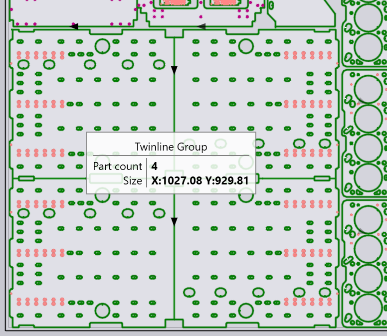

Záložka dielce
Záložka Diely (Dielce) sa používa na pridávanie dielcov do rozmiestnenia a na nastavenie parametrov, ako je množstvo na rozmiestnenie, prijateľné uhly natočenia atď.

Tlačidlá činností
Na ľavej strane okna dielcov sú tlačidlá, ktoré sa používajú na pridávanie alebo odoberanie dielcov do zákazky a na vykonávanie niektorých operácií so všetkými dielcami:
-
Add (Pridať) na pridávanie dielca pre rozmiestnenie. Môže to byť už vytvorený súbor .fx alebo akýkoľvek 2D alebo 3D súbor, ktorý dokáže TecZone Laser naimportovať a skonvertovať na plechový dielec. Tieto súbory sa potom upravia ako je to vysvetlené v sekcii Part Workflow (Pracovný postup dielca).
-
Tlačidlo Add Assembly (Pridať zostavu) sa používa na pridávanie celej 3D zostavy. TecZone Laser vyberie plechové dielce zo zostavy a pridá ich do zákazky s rozmiestnením. Počty kusov jednotlivých komponenty zostavy sú nastavené tak, aby sa vytvorilo jedno množstvo celej zostavy.
-
Tlačidlo Add Layout (Pridať rozmiestnenie) sa používa na import súboru DXF obsahujúceho tabuľu s úplným rozmiestnením a jeho rozloženie späť na zákazku s rozmiestnením.
-
Tlačidlo Import CSV sa používa na načítanie definície zákazky s rozmiestnením zo súboru CSV (comma separated values). Súbor by mal mať špecifický formát s 8 stĺpcami, pozri vysvetlenie v popise nižšie:

-
Save Parts (Uložiť dielce) sa používa na uloženie zvolených dielcov do súborov .FX. Keď spustíte úlohu rozmiestňovania s geometrickými súbormi (ako DXF, GEO, 3D súbory), tieto sa automaticky nastavia po pridaní do zoznamu dielcov. Toto tlačidlo je možné použiť na uloženie nastavených verzií týchto dielcov, aby sa dali znova použiť v iných zákazkách rozmiestňovania.
-
Re-Tool All (Pepočítať všetko) sa používa na prepočítanie obrábania pre všetky dielce v zákazke. Používa sa na vykonanie niektorých zmien nastavení stroja alebo nastavení pre túto konkrétnu zákazku rozmiestnenia, aby sa zabezpečilo, že všetky dielce používajú nové nastavenia.
Stĺpce tabuľky dielcov
Tu sú niektoré stĺpce v tabuľke dielcov:
-
Kus (Množstvo) je požadované množstvo dielcov. Tu je možné zadať jednoduché číslo, alebo rozsah napr.
20 - 30. Znamená to, že bude rozmiestnených aspoň 20 kópií tohto dielca, ale nie viac ako 30. TecZone Laser bude môcť rozmiestniť akékoľvek množstvo dielcov z tohoto intervalu, aby maximalizoval efektivitu rozmiestnenia, nikdy ale nezačne novú tabuľu len preto, aby rozmiestnil dielce nad minimálne množstvo. -
Dielca sa rozmiestňujú v rastúcom poradí podľa Priority, ak sú pre rôzne dielce nastavené rôzne hodnoty priority.
Priority = 0sa pritom považuje za špeciálny prípad - tieto dielce majú najnižšiu prioritu. -
Part Grain Pref (Smer valcovania) sa používa na nastavenie smeru valcovania (vlákna) dielca, ak to je potrebné. Ak je nastavené na hodnotu inú ako None (žiadna), obmedzí to uhly, pod ktorými môže nástroj rozmiestňovania otáčať dielec. (Aby to fungovalo správne, potrebné je tiež zadať smer vlákien tabúľ v záložke Tabule).
-
Hodnota Group (Skupina) je poznámka pre nástroj na rozmiestňovanie - TecZone Laser sa pokúsi udržať súčiastky s rovnakou hodnotou skupiny pohromade na tej istej tabuli, ak to je možné.
-
Ak je pri dielci zapnutý prepínač Twinline, nástroj na rozmiestňovanie sa pokúsi použiť na tento dielec rezanie so spoločnými rezmi (dielec má spoločné rezy len s vlastnými kópiami). Tu je príklad, kde takmer obdĺžnikový dielec používa rezanie so spoločnou čiarou vo vertikálnom aj horizontálnom smere:
